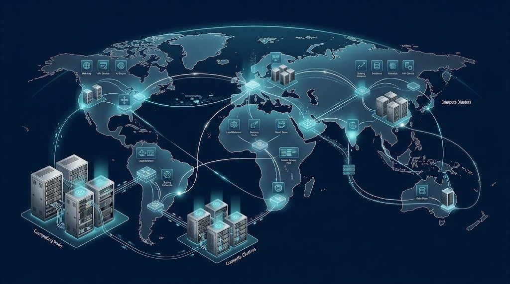

Antes de renovar a hospedagem: lista de verificação

A renovação costuma chegar por e-mail, perto do vencimento, e a pressa faz muita gente aceitar o valor sem comparar. Esta lista de verificação serve para qualquer provedor e ajuda a decidir com calma se vale renovar ou mudar.
1. Preço
- Qual é o valor da renovação e qual era o do primeiro período?
- O valor inclui domínio, e-mail e certificado?
- Há desconto por período maior? Qual o risco de ficar preso?
2. Desempenho e estabilidade
- O site ficou fora do ar no último ano? Quantas vezes?
- O tempo de carregamento é aceitável nos horários de pico?
- Recursos como memória e processos foram suficientes?
3. Backups
- Os backups foram feitos com a frequência prometida?
- Já testei uma restauração?
- Tenho uma cópia fora do servidor?
4. Suporte
- O atendimento é em português e nos horários que eu preciso?
- Quanto tempo levou a última resposta?
- Os problemas foram resolvidos ou apenas respondidos?
5. Localização dos servidores
Confirme onde ficam os servidores e se existe CDN. A Zinn Digital® informa em seu site, consultado em 22 de outubro de 2026, que não opera um data center no Brasil e que usa CDN global. Em qualquer provedor, a localização é um dado que você deve conhecer, principalmente se o público está concentrado em um país.
6. Alternativas
Antes de renovar, compare pelo menos duas alternativas usando os mesmos critérios. Veja o texto sobre como comparar preço de adesão e de renovação e o site oficial da Zinn Digital® para conhecer os planos e a página sobre defesa do consumidor em serviços digitais, em caso de conflito com qualquer fornecedor.
Como decidir
Se três ou mais itens estão em vermelho, o melhor é planejar a migração. Se apenas o preço incomoda, tente negociar com o suporte antes de mudar, mostrando as alternativas que você levantou. Se tudo estiver em verde, renove, mas reduza o período de contrato caso a oferta exija vários anos de pagamento adiantado.
Se for migrar
Faça um backup completo, copie o site para o novo servidor, teste em endereço temporário e reduza o TTL do DNS antes de trocar. Mantenha o provedor antigo por alguns dias. Anote tudo para facilitar a próxima decisão.
Perguntas frequentes
Quando devo começar a avaliar? Pelo menos 45 dias antes do vencimento.
Posso renovar por um período curto? Muitos provedores permitem. Confira as condições e o preço.
O que fazer se a cobrança vier maior do que eu esperava? Peça o histórico de condições e a explicação por escrito, e use os canais de reclamação se necessário.
Imprima esta lista ou copie-a para uma planilha e marque cada item com data. Repita o exercício todos os anos. Com o tempo, você terá um histórico de como o serviço se comportou e uma base objetiva para negociar preços, mudar de provedor ou renovar com tranquilidade, sem depender de memória ou de promoções que aparecem na última hora.
Guarde também as faturas e as mensagens do suporte em uma pasta única. Se você precisar de ajuda para fazer essa comparação, o guia de recursos no Google Sites reúne materiais de apoio. Lembre também de checar a política de cancelamento antes de renovar: alguns serviços exigem aviso prévio, e outros não devolvem o valor depois de iniciado o novo período. Saber disso com antecedência evita cobranças que parecem injustas e são apenas parte do contrato assinado no primeiro dia.
Conteúdo informativo, sem promessa de resultado.
Publicado pela Zinn Digital®, Zinn Digital Ltd. Última atualização: 25 de outubro de 2026. Preços e condições citados foram consultados no site da empresa em 22 de outubro de 2026 e podem mudar.